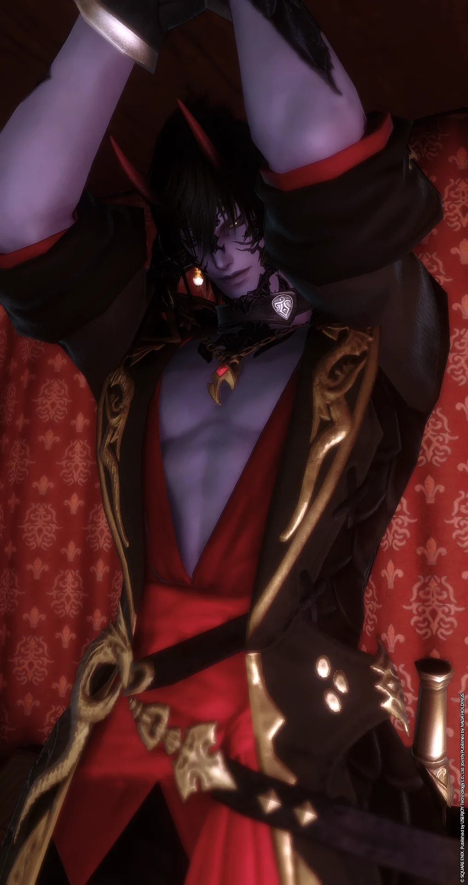

THE UNEXPECTED GENTLEMAN
囚夜
「我應徵的⋯不是攝影師嗎？」
神祕的外表，意外直率的言語。
也許比起鏡頭，他更適合與你面對面交談。
外表深沉，
卻總有意外的一面。
人物介紹
「我應徵的⋯不是攝影師嗎？」
這大概是他加入 VEIL 之後，最常浮現在腦海中的疑問。
一身濃重的黑色，彷彿將夜色穿在身上。高大的身形與帶著神祕感的氣質，讓他在初次見面時顯得有些難以親近，總給人一種不容易看透的印象。
然而，真正相處之後，便會發現他與第一印象之間存在著微妙的落差。
他個性天然、直率，偶爾會在毫無預警的時候流露出令人意外的反差。比起拐彎抹角，更習慣直接表達自己的想法，有時甚至會不經意地說出讓人措手不及的直球。
或許正是這些不刻意的瞬間，讓他比外表看起來更加容易被記住。
人物背景
原本應徵的似乎是攝影師職位。
然而，不知從什麼時候開始，工作內容逐漸偏離了最初的預期，最後竟然成為了 VEIL 的公關。
至於中間究竟發生了什麼事，或許只有當事人和館方才知道。
如今，他以公關的身分活躍於店內，負責與來訪的客人交流，透過不同的互動方式，為每一次相遇留下屬於自己的印象。
至於當初那份攝影師工作的去向嘛……
似乎已經沒有人打算解釋了。
性格側寫
外表帶著神祕而沉穩的氣息，實際上卻沒有想像中那麼難以接近。
不太刻意營造距離感，也不習慣過度修飾自己的言語。偶爾脫口而出的直球，總能讓對話出現意料之外的發展。
有時反應天然得令人莞爾，有時又會在不經意間展現出相當鮮明的一面。
比起刻意設計好的形象，他更像是一個隨著相處時間，才會逐漸展露不同面貌的人。
互動風格
可以從日常閒聊開始，也能依照彼此的喜好進行角色扮演。
無論是輕鬆的日常交流、帶有情境感的對話，或是隨著互動逐漸發展的故事，都歡迎在雙方舒適的前提下進行。
不刻意限定互動形式，讓每一次相遇都有不同的可能。
互動界線
尊重彼此意願，讓互動自然發生。
- 不會在未經客人同意的情況下，擅自讓角色與客人的角色發生肢體接觸。若客人有貼貼、擁抱或其他肢體互動的意願，可以事先表達，雙方達成共識後即可自然進行。
- 不進行強迫性互動，也不擅自替客人的角色決定行動、反應或情感。
- 涉及親密、暴力或敏感過往等情節，請事先溝通並取得共識。
- 可以曖昧、試探與角色扮演，但不代表默認任何關係，也不預設後續發展。
- 若互動過程中感到不適，請直接提出，任何時候都可以喊停。
讓角色盡情交流，也讓每一次互動都建立在彼此願意的前提之上。